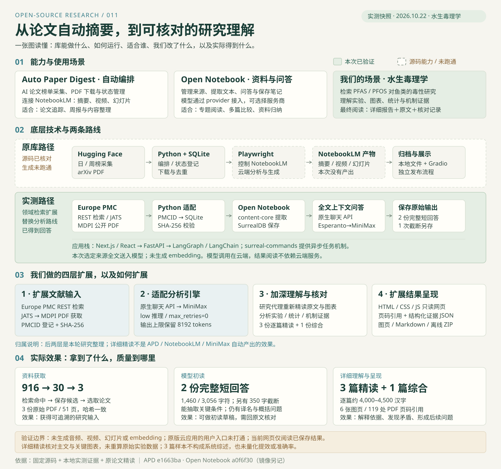

Auto Paper Digest ↗
把论文采集、下载、NotebookLM 生成、归档和发布串成流程，适合跟踪 AI 论文榜单。
PAPER WORKFLOW / FROM CAPABILITY TO EVIDENCE
从 Auto Paper Digest 的论文采集与生成流程出发，探索 Open Notebook + MiniMax，形成有原文依据的水生毒理学解读。
看清源库能做什么、为什么切换路线、怎样扩展，以及最终得到的详细报告与实际效果。
小样本工作流验证 · 不是系统综述
论文工具的价值在于组织一条可追溯的链路：资料 → 上下文 → 模型回答 → 原文核对。成功返回一段文字，只完成了其中一环。
RESEARCH ABSTRACT / 研究摘要
Auto Paper Digest 用 Python + SQLite 采集和登记论文，以 Playwright 操作 NotebookLM 生成内容，再用 Gradio 展示并衔接归档发布。我们的目标，是将这条思路用于水生毒理学，说明白论文的实验、结果与机制，并让每个重要判断能够回到原文。
原库入口不覆盖本次选题，因此新增主题查询、PMCID 登记和 PDF 校验。916 条命中 → 30 条候选 → 3 篇原文。
NotebookLM 接入未取得产出；转用 Next.js → FastAPI → SurrealDB 管理资料，经 Esperanto → MiniMax 完成全文问答，并适配截断问题。
两份完整回答提供初读线索。研究代理进一步核对 51 页原文和关键图表，形成 3 篇精读、1 篇综合与逐项证据。
完整应用入口未打通，转为发布可阅读、追溯、打印和下载的成果。当前交付研究档案；用户上传与在线问答仍未交付。
02 / THE WHOLE PICTURE
库的能力 → 底层架构 → 领域扩展 → 实际效果。
图中分别标出原库、实测路径和精读加工。
把论文采集、下载、NotebookLM 生成、归档和发布串成流程，适合跟踪 AI 论文榜单。
管理来源、提取文本、组织上下文，连接可配置的模型做资料问答。本次接入 MiniMax。
保存真实输入和模型原文，再补充逐篇精读、图表核对及可离线阅读的结果网页。

按你要完成的任务选择组件。
原 APD 接 Hugging Face 日榜、周榜和 arXiv，适合自动整理批次论文，衔接 NotebookLM 内容生产。
前提：生成服务的登录与访问可用。Open Notebook 管理来源，选择资料后调用模型，适合初读、提取研究条件和形成比较初稿。
本次验证全文上下文问答；向量检索未测试。领域检索取得论文，随后核读方法与图表，分清观察、解释和推断，整理为可追溯的长报告。
本页可阅读和下载；长报告包含额外研究代理工作。03 / WHAT WE ACTUALLY GOT
以下是本次三篇论文的真实结果。
数量、质量与用户可用性分别说明。
Open Notebook + MiniMax 能基于选定论文形成有用的初读和比较草稿。要解释实验、审查图表、处理文中矛盾，我们又进行了原文精读与交叉核对。当前交付的是你可以直接阅读、追溯和下载的研究结果页。
检索与获取 · 已验证
916 → 30 → 3该次检索命中 916 条，保存 30 条候选，选取 3 篇开放论文；3 份原始 PDF 下载并校验，全文共 51 页。
查看检索证据 ↗模型输出 · 完整返回
1,460 / 3,056首次 350 字符截断；针对模型适配后得到 2 份完整短回答。能提取剂量、周期、LC50 和 CI，但物种译名、概括和引用仍有问题。
查看未经改写的模型效果 ↗研究深化 · 额外精读
3 篇 + 1 篇逐篇约 4,000–4,500 汉字，解释设计、数据、统计、机制与局限；配 6 张图页与 119 处 PDF 页码引用，来源为研究代理原文分析。
阅读完整详细报告 ↗精读具体增加了什么
看总览、读完整报告、跳到 PDF 原页、核对历史回答、下载 Markdown / 图 / 离线 ZIP，或单独打开报告打印。浏览这些结果不调用模型。
NotebookLM 生成产出为 0；未生成音频、视频、幻灯片或 embedding。原版完整应用的用户上传与在线问答入口未打通；当前页面提供只读结果。
这是三篇样本的工作流与内容核查，未做模型盲评、耗时对照或成本收益实验；不能据此声称准确率、效率提升比例或“最佳模型”。模型调用记录 · 完整验证边界
04 / READING THE SCIENCE
从原文重建论证，而非只复述摘要。
选择论文，阅读全文、关键图页和证据说明。
05 / ARCHITECTURE & EXTENSIONS
Auto Paper Digest 负责采集和生成编排；
Open Notebook 管理资料与模型交互。
APD 用 Click 提供 CLI，Requests / BeautifulSoup 采集榜单，SQLite 保存论文和处理状态，Playwright 操作 NotebookLM。Gradio 展示已有产物，发布为独立步骤。
Open Notebook 的 React / TypeScript 前端调用 Python API；LangGraph / LangChain 组织来源处理和聊天，content-core 抽取文档，Esperanto 连接模型服务。
SurrealDB 保存来源与文本；surreal-commands 支持后台任务；聊天检查点另用 SQLite。本次资料提取完成后，将选定全文送给 MiniMax。
源码调用链为 FastAPI → process_source → source_graph → content-core.extract_content → source.full_text → SurrealDB。本次 3 篇原始导入使用同步处理；后续另一次异步上传 API 验收也完成文本提取。
保存证据未记录 content-core 最终采用的具体 PDF 解析器，因此不能认定 OCR 或某个解析引擎已验证。Docling / Crawl4AI 在本次环境关闭。抽取结果有空格丢失和重复标题，图表另由研究代理查看原始页面。
本次聊天是“选定来源全文 → 上下文 → 模型回答”。没有建立 embedding，也没有验证向量召回、重排或扫描件识别；不能将这次效果描述为已验证的完整 RAG 系统。
新增 Europe PMC REST 查询，限制主题、开放获取和日期，保存候选；读取 JATS 元数据取得公开 PDF，校验文件头与 SHA-256，以 PMCID 登记到原库 SQLite。
aquatic_research.py 源码快照 ↓ 的 search()、prepare()；本次下载规则支持所选 MDPI PDF，其他出版社需要独立适配与验证。
将 PDF 导入 Open Notebook，调用 /api/chat/context 和 /api/chat/execute；对指定 MiniMax 模型使用低推理档位，修复本次回答截断问题。
runtime.patch 适配差异 ↓；设置 reasoning_effort=low、max_retries=0，保留 max_tokens=8192。替代路线独立于 APD 的 NotebookLM 生成链，未改成通用自动切换引擎。
读取完整方法、结果与讨论，核对图表、重复单位、统计口径和页码，分别记录观察、作者解释与我们的判断；形成 3 篇详细报告和 1 篇综合。
011/results/detailed/ 保存 Markdown 与证据 JSON；报告由研究代理完成。未重分析原始测序/个体数据，补充材料未完整取得。
白名单接入原始文件并校验哈希，生成静态正文、目录、来源链接和离线 ZIP。总览图、真实效果、详细报告和失败记录在同一页面关联。
011/scripts/import_artifacts.py、package_web.py、report_renderer.py、verify_web.py。当前网页为只读成果；原 APD 的 arXiv 发布路径尚未适配 PMC，媒体下载/发布没有本轮验收。
上传公开原始 PDF，由 Open Notebook 提取并保存文本。三篇共提取约 17.1 万字符；原提取有空格丢失与重复标题。本轮精读另行读取原始 PDF 并目视核对关键图表。
通过原生聊天接口调用 MiniMax-M3.1-Flash。本次采用选定来源的完整文本，未生成 embedding，也未验证向量检索。
保留原始 Markdown、来源 ID、模型调用用量与结束原因。页面将模型原文和研究核对分开，避免把修改后的文字伪装成原始效果。
检索与下载
Python · Europe PMC REST · 期刊开放 PDF · SHA-256 · SQLite
云端应用
Open Notebook 1.15.0 · Docker Compose · SurrealDB 2.7.0
模型适配
MiniMax-M3.1-Flash · Esperanto 2.28.0 · reasoning_effort=low
当前展示
静态 HTML / CSS / JavaScript · 本地保存的数据 · 无在线生成接口
Open Notebook 源码固定于 a0f6f3081ae06328f0a451b3a3ef2959ca25721d；源码提交和实际镜像摘要分别登记。技术版本是研究时的快照。
上游还提供其他功能，例如 Open Notebook 的向量搜索、转换与播客能力。本次效果只统计已保存的真实结果。
06 / HISTORICAL MODEL OUTPUT
保留模型原文，包括其中的错误。
详细理解请阅读上方新增的逐篇报告。
展示中的来源链接可定位本页对应论文卡，不是 PDF 页码；复制和下载保留原始 [source:…] 会话来源标记。
READ WITH CARE
物种名称：Cyprinodon variegatus 在原回答中的中文俗名不可靠，阅读时以拉丁学名为准。
综合结论：“三种鱼均有肝脏或发育毒性”的归纳过宽。两篇观察肝毒性，第三篇主要考察胚胎 / 幼体的急性致死和亚致死效应。
引用与外推：特定剂量下的混合物拮抗不能推广到所有 PFAS；模型提出的后续问题属于研究建议。
07 / SOURCE MATERIAL
研究样本聚焦 PFAS / PFOS 对鱼类的毒性。
不同物种、生命阶段与暴露条件不能直接横比。
原始 PDF 归论文作者所有，来源清单标注 CC BY。下载文件与研究时文件按 SHA-256 核对；论文结论以原文为准。
08 / EVIDENCE & LIMITS
把接口成功、内容完整与科学可靠分开判断。
未完成的验证保留为边界。
| 验证环节 | 方法与证据 | 结果 |
|---|
finish_reason=length
输出额度耗尽，正文截断
finish_reason=stop
单篇与综合回答完整返回
保留 8,192-token 上限，仅针对当前模型与中国区地址设置 reasoning_effort=low、max_retries=0。这是经过本轮适配的效果，不能算作原版默认参数直接成功。三次调用累计 108,597 tokens，用量不等于账单金额。
原版应用在云机内通过 HTTP 与 API 检查，但用户浏览器没有可用入口。原生预览排查未找到当前任务可用的端口映射；ngrok 与 Microsoft Dev Tunnels 的必要目标被平台代理以 403 Domain forbidden 拒绝，而 npm 对照请求正常。
这只能说明本次访问路径未打通，不能据此断言所有云环境都禁止内网穿透。已停止完整 Open Notebook 应用的访问排查；本轮将保存的研究结果发布为静态网站，提供阅读和下载。
09 / REUSABLE METHOD
换一个领域，仍然保留同样的证据链。
先验证小样本，再决定是否扩大。
明确污染物、物种、生命阶段、暴露周期和效应终点。保存检索式、日期、候选记录及取舍理由，避免把少量样本称作系统综述。
记录 DOI、开放许可与下载源，核验 PDF 文件头及 SHA-256。检查提取文本是否包含实验与结果章节，另行核对图表、单位和缺失内容。
要求回答区分作者结论、模型推断与研究建议，并保留来源 ID。核对物种、处理组、剂量单位、时间和统计量，再比较研究之间的共性与差异。
同时保存模型原文、提示词或请求记录、版本、结束原因、实际用量与质量批注。明确哪些由程序确认、哪些由研究代理抽查、哪些尚未验证。